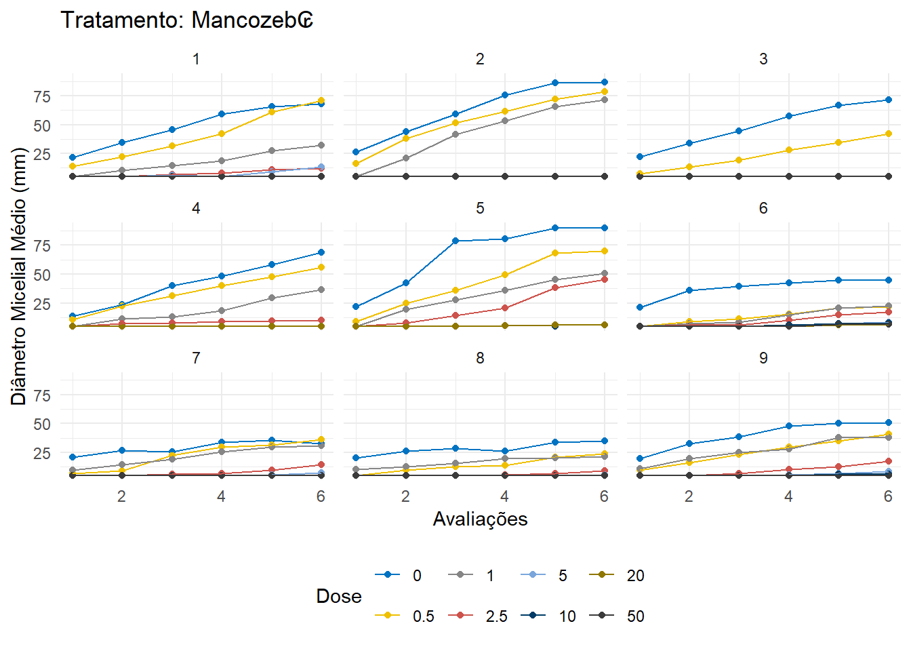

options("install.lock"=FALSE)
library(conflicted)
conflict_prefer("filter", "dplyr")
conflict_prefer("lag", "dplyr")1. Pacotes utilizados para criar o mapa da página Sobre
library(rnaturalearthhires)
library(rnaturalearth)
library(tidyverse)
library(sf)
library(ggiraph)
library(dplyr)
library(stats)
library(conflicted)2. Carregando o Dataset
Para a leitura e importação de dados em Excel, utilizaremos o pacote `readxl`, para isso é necessário que instale e carregue este pacote. O pacote `readxl`, permite a leitura de arquivos Excel (.xlsx) sendo especialmente útil para importar dados que são frequentemente armazenados em planilhas.
library(readxl)
dados <- read_excel("SensibilidadeCory2020.xlsx")
head(dados)# A tibble: 6 × 7
trat aval isolado dias rep dose diam
<chr> <dbl> <dbl> <dbl> <dbl> <dbl> <dbl>
1 Fox₢ 1 1 2 1 0 23.5
2 Fox₢ 1 1 2 2 0 21.4
3 Fox₢ 1 1 2 3 0 20.0
4 Fox₢ 1 2 2 1 0 25.6
5 Fox₢ 1 2 2 2 0 26.4
6 Fox₢ 1 2 2 3 0 26.33. Visualização de dados
Para a visualização do conjunto de dados primeiramente foi calculadas as médias de diâmetro médio da colônia de cada isolado, em cada fungicida, dose e avaliação.
Utilizou a função ggplot() do pacote tidyverse e diferentes formatos gráficos. A variável resposta crescimento micelial (mm) foi visualizada por fungicida, em cada nível dos fatores: Isolados, Avaliações e Doses.
Gráfico de pontos: Esse tipo de gráfico é interessante para visualização da dispersão dos dados, onde cada ponto representa uma observação. Foi utilizado esse tipo de gráfico no trabalho devido o número de repetições (3) ser relativamente pequeno, facilitando a visualização. Utilizou a função geom_point() para plotar o gráfico.
Gráfico de linhas: Utilizou a função geom_line() do pacote ggplot2 para criar um gráfico de linhas. Esse tipo de gráfico é usado para visualizar tendências ou padrões ao longo de uma variável contínua, como, tempo, temperatura, doses.
O gráfico de linhas aqui foi utilizado para ligar os pontos, mostrando o comportamento do crescimento micelial (mm) em em relação as variáveis contínuas: doses e avaliações no tempo.
facet_wrap(): foi usado para criar uma grade gráfica, onde cada subgráfico representa um subconjunto dos dados.
Para melhor visualização das variáveis respostas, utilizamos a “Dose” como um fator e adicionamos facetas com a função facet_wrap() para vizualizarmos os tratamentos separadamente.
3.1 Crescimento micelial x Doses (Isolados)
library(ggsci)
conflicts_prefer(dplyr::filter)
# Médias
medias <- dados |>
group_by(trat,dose, aval, isolado) |>
summarize(media_diam = mean(diam, na.rm = TRUE), .groups = 'drop') |>
ungroup()
# Função de gráficos para cada tratamento
plot_graf <- function(data, tratam) {
ggplot(data, aes(x = dose, y = media_diam, color = factor(isolado), group = isolado)) +
geom_point()+
geom_line()+
facet_wrap(~aval)+
labs(title = paste("Tratamento:", tratam),
x = "Concentração",
y = "Diâmetro Micelial Médio (mm)",
color = "Isolados")+
scale_color_jco()+
theme_minimal()+
theme(legend.position = "bottom" )
}
# Função para filtrar e plotar os gráficos para cada tratamento
for (tratam in unique(medias$trat)) {
data <- medias |>
filter(trat == tratam)
print(plot_graf(data, tratam))
dev.flush()
}3.2 Crescimento micelial x Doses (Avaliações)
# Médias
conflicts_prefer(dplyr::filter)
medias <- dados |>
group_by(trat, dose, aval, isolado) |>
summarize(media_diam = mean(diam, na.rm = TRUE), .groups = 'drop') |>
ungroup()
# Função de gráficos para cada tratamento
plot_graf <- function(data, tratam) {
ggplot(data, aes(x = dose, y = media_diam, color = factor(aval), group = aval)) +
geom_point()+
geom_line()+
facet_wrap(~isolado)+
labs(title = paste("Tratamento:", tratam),
x = "Concentração",
y = "Diâmetro Micelial Médio (mm)",
color = "Avaliação")+
scale_color_jco()+
theme_minimal()+
theme(legend.position = "bottom" )
}
# Função para filtrar e plotar os gráficos para cada tratamento
for (tratam in unique(medias$trat)) {
data <- medias |>
filter(trat == tratam)
print(plot_graf(data, tratam))
dev.flush()
}3.3 Crescimento micelial x Avaliações (Doses)
conflicts_prefer(dplyr::filter)
medias <- dados |>
group_by(trat, dose, aval, isolado) |>
summarize(media_diam = mean(diam, na.rm = TRUE), .groups = 'drop') |>
ungroup()
# Função de gráficos para cada tratamento
plot_graf <- function(data, tratam) {
ggplot(data, aes(x = aval, y = media_diam, color = factor(dose), group = dose)) +
geom_point()+
geom_line()+
facet_wrap(~isolado)+
labs(title = paste("Tratamento:", tratam),
x = "Avaliações",
y = "Diâmetro Micelial Médio (mm)",
color = "Dose")+
scale_color_jco()+
theme_minimal()+
theme(legend.position = "bottom" )
}
# Função para filtrar e plotar os gráficos para cada tratamento
for (tratam in unique(medias$trat)) {
data <- medias |>
filter(trat == tratam)
print(plot_graf(data, tratam))
dev.flush()
}
4. Hipóteses
Hipótese nula (H0): Não há diferença de sensibilidade entre os isolados para nenhum dos fungicidas.
Hipótese alternativa (H1): Há pelo menos uma diferença de sensibilidade entre os isolados para um dos fungicidas.
5. Modelos de Regressão Não-Linear
Os dados foram submetidos a análises de regressão não-linear, utilizando os modelos Weibull 1, Weibull 2, LL.3 e LN.3 para identificar o modelo que melhor representa a relação Log doses de cada fungicida e crescimento micelial de cada isolado, para estimar a CE50 (concentração efetiva de fungicida capaz de reduzir 50% do crescimento micelial).
library(dplyr)
library(drc)
library(ggplot2)
# Função para ajustar múltiplos modelos de dose-resposta e selecionar o melhor modelo
ajustar_e_selecionar_melhor_modelo <- function(dados, tratamento, isolado, avaliacao) {
data_filtrado <- dados %>%
filter(trat == tratamento, isolado == isolado, aval == avaliacao) %>%
group_by(dose) %>%
slice_head(n = 3) %>%
ungroup()
# Ajustar os modelos
modelo1 <- tryCatch(drm(diam ~ dose, data = data_filtrado, fct = LN.3()), error = function(e) NULL)
modelo2 <- tryCatch(drm(diam ~ dose, data = data_filtrado, fct = LL.3()), error = function(e) NULL)
modelo3 <- tryCatch(drm(diam ~ dose, data = data_filtrado, fct = W1.3()), error = function(e) NULL)
modelo4 <- tryCatch(drm(diam ~ dose, data = data_filtrado, fct = W2.3()), error = function(e) NULL)
# Selecionar o melhor modelo com base no AIC
modelos <- list(LN.3 = modelo1, LL.3 = modelo2, W1.3 = modelo3, W2.3 = modelo4)
modelos_validos <- modelos[!sapply(modelos, is.null)]
if (length(modelos_validos) > 0) {
aic_values <- sapply(modelos_validos, AIC, simplify = TRUE)
melhor_modelo <- names(aic_values)[which.min(aic_values)]
return(list(modelo = modelos_validos[[melhor_modelo]], tipo = melhor_modelo, AIC = aic_values[melhor_modelo]))
} else {
return(NULL)
}
}
# Lista para armazenar os melhores modelos
melhores_modelos <- list()
# Lista de tratamentos, isolados e avaliações únicos
tratamentos <- unique(dados$trat)
isolados <- unique(dados$isolado)
avaliacoes <- unique(dados$aval)
# Iterar sobre todas as combinações de tratamento, isolado e avaliação
for (tratamento in tratamentos) {
for (isolado in isolados) {
for (avaliacao in avaliacoes) {
# Ajustar e selecionar o melhor modelo para a combinação atual
melhor_modelo <- ajustar_e_selecionar_melhor_modelo(dados, tratamento, isolado, avaliacao)
chave <- paste(tratamento, isolado, avaliacao, sep = "-")
melhores_modelos[[chave]] <- melhor_modelo
}
}
}Error in optim(startVec, opfct, hessian = TRUE, method = optMethod, control = list(maxit = maxIt, :
non-finite finite-difference value [3]
Error in optim(startVec, opfct, hessian = TRUE, method = optMethod, control = list(maxit = maxIt, :
non-finite finite-difference value [3]
Error in optim(startVec, opfct, hessian = TRUE, method = optMethod, control = list(maxit = maxIt, :
non-finite finite-difference value [3]
Error in optim(startVec, opfct, hessian = TRUE, method = optMethod, control = list(maxit = maxIt, :
non-finite finite-difference value [3]
Error in optim(startVec, opfct, hessian = TRUE, method = optMethod, control = list(maxit = maxIt, :
non-finite finite-difference value [3]
Error in optim(startVec, opfct, hessian = TRUE, method = optMethod, control = list(maxit = maxIt, :
non-finite finite-difference value [3]
Error in optim(startVec, opfct, hessian = TRUE, method = optMethod, control = list(maxit = maxIt, :
non-finite finite-difference value [3]
Error in optim(startVec, opfct, hessian = TRUE, method = optMethod, control = list(maxit = maxIt, :
non-finite finite-difference value [3]
Error in optim(startVec, opfct, hessian = TRUE, method = optMethod, control = list(maxit = maxIt, :
non-finite finite-difference value [3]# Função para plotar os dados e o melhor modelo
plotar_melhor_modelo <- function(dados, melhor_modelo, tratamento, isolado, avaliacao) {
data_filtrado <- dados %>%
filter(trat == tratamento, isolado == isolado, aval == avaliacao) %>%
group_by(dose) %>%
slice_head(n = 3) %>%
ungroup()
if (!is.null(melhor_modelo$modelo)) {
ggplot(data_filtrado, aes(x = dose, y = diam)) +
geom_point() +
geom_line(aes(y = predict(melhor_modelo$modelo)), color = 'blue') +
labs(title = paste("Tratamento:", tratamento, "Isolado:", isolado, "Avaliação:", avaliacao),
subtitle = paste("Melhor modelo:", melhor_modelo$tipo, "AIC:", round(melhor_modelo$AIC, 2)),
x = "Dose",
y = "Diâmetro") +
theme_minimal()
} else {
ggplot(data_filtrado, aes(x = dose, y = diam)) +
geom_point() +
labs(title = paste("Tratamento:", tratamento, "Isolado:", isolado, "Avaliação:", avaliacao),
subtitle = "Nenhum modelo ajustado",
x = "Dose",
y = "Diâmetro") +
theme_minimal()
}
}
# Plotar os gráficos para cada combinação
for (chave in names(melhores_modelos)) {
comb <- unlist(strsplit(chave, "-"))
tratamento <- comb[1]
isolado <- as.numeric(comb[2])
avaliacao <- as.numeric(comb[3])
melhor_modelo <- melhores_modelos[[chave]]
print(plotar_melhor_modelo(dados, melhor_modelo, tratamento, isolado, avaliacao))
}

6. Estimativa da EC50
Utilizou o pacote ec50estimator para estimar a EC50 de cada fungicida para cada isolado, nas seis avaliações.
library(ec50estimator)
df_ec50_LN <- estimate_EC50(diam ~ dose,
data = dados,
isolate_col = "isolado",
strata_col = c("trat", "aval"),
interval = "delta",
fct = drc::LN.3())Error in optim(startVec, opfct, hessian = TRUE, method = optMethod, control = list(maxit = maxIt, :
non-finite finite-difference value [3]
Error in optim(startVec, opfct, hessian = TRUE, method = optMethod, control = list(maxit = maxIt, :
non-finite finite-difference value [3]
Error in optim(startVec, opfct, hessian = TRUE, method = optMethod, control = list(maxit = maxIt, :
non-finite finite-difference value [3]
Error in optim(startVec, opfct, hessian = TRUE, method = optMethod, control = list(maxit = maxIt, :
non-finite finite-difference value [3]
Error in optim(startVec, opfct, hessian = TRUE, method = optMethod, control = list(maxit = maxIt, :
non-finite finite-difference value [3]
Error in optim(startVec, opfct, hessian = TRUE, method = optMethod, control = list(maxit = maxIt, :
non-finite finite-difference value [3]
Error in optim(startVec, opfct, hessian = TRUE, method = optMethod, control = list(maxit = maxIt, :
valor inicial em vmmin não é finito
Error in optim(startVec, opfct, hessian = TRUE, method = optMethod, control = list(maxit = maxIt, :
non-finite finite-difference value [3]
Error in optim(startVec, opfct, hessian = TRUE, method = optMethod, control = list(maxit = maxIt, :
non-finite finite-difference value [1]df_ec50_LL <- estimate_EC50(diam ~ dose,
data = dados,
isolate_col = "isolado",
strata_col = c("trat", "aval"),
interval = "delta",
fct = drc::LL.3())Error in optim(startVec, opfct, hessian = TRUE, method = optMethod, control = list(maxit = maxIt, :
non-finite finite-difference value [3]
Error in optim(startVec, opfct, hessian = TRUE, method = optMethod, control = list(maxit = maxIt, :
non-finite finite-difference value [3]
Error in optim(startVec, opfct, hessian = TRUE, method = optMethod, control = list(maxit = maxIt, :
non-finite finite-difference value [3]
Error in optim(startVec, opfct, hessian = TRUE, method = optMethod, control = list(maxit = maxIt, :
non-finite finite-difference value [3]
Error in optim(startVec, opfct, hessian = TRUE, method = optMethod, control = list(maxit = maxIt, :
valor não finito fornecido por optim
Error in optim(startVec, opfct, hessian = TRUE, method = optMethod, control = list(maxit = maxIt, :
non-finite finite-difference value [3]
Error in optim(startVec, opfct, hessian = TRUE, method = optMethod, control = list(maxit = maxIt, :
non-finite finite-difference value [1]df_ec50_W1 <- estimate_EC50(diam ~ dose,
data = dados,
isolate_col = "isolado",
strata_col = c("trat", "aval"),
interval = "delta",
fct = drc::W1.3())Error in optim(startVec, opfct, hessian = TRUE, method = optMethod, control = list(maxit = maxIt, :
non-finite finite-difference value [3]
Error in optim(startVec, opfct, hessian = TRUE, method = optMethod, control = list(maxit = maxIt, :
non-finite finite-difference value [3]
Error in optim(startVec, opfct, hessian = TRUE, method = optMethod, control = list(maxit = maxIt, :
non-finite finite-difference value [3]
Error in optim(startVec, opfct, hessian = TRUE, method = optMethod, control = list(maxit = maxIt, :
non-finite finite-difference value [3]
Error in optim(startVec, opfct, hessian = TRUE, method = optMethod, control = list(maxit = maxIt, :
non-finite finite-difference value [3]
Error in optim(startVec, opfct, hessian = TRUE, method = optMethod, control = list(maxit = maxIt, :
non-finite finite-difference value [3]
Error in optim(startVec, opfct, hessian = TRUE, method = optMethod, control = list(maxit = maxIt, :
non-finite finite-difference value [3]
Error in optim(startVec, opfct, hessian = TRUE, method = optMethod, control = list(maxit = maxIt, :
non-finite finite-difference value [3]
Error in optim(startVec, opfct, hessian = TRUE, method = optMethod, control = list(maxit = maxIt, :
valor inicial em vmmin não é finito
Error in optim(startVec, opfct, hessian = TRUE, method = optMethod, control = list(maxit = maxIt, :
non-finite finite-difference value [3]df_ec50_W2 <- estimate_EC50(diam ~ dose,
data = dados,
isolate_col = "isolado",
strata_col = c("trat", "aval"),
interval = "delta",
fct = drc::W2.3())Error in optim(startVec, opfct, hessian = TRUE, method = optMethod, control = list(maxit = maxIt, :
non-finite finite-difference value [1]
Error in optim(startVec, opfct, hessian = TRUE, method = optMethod, control = list(maxit = maxIt, :
non-finite finite-difference value [3]
Error in optim(startVec, opfct, hessian = TRUE, method = optMethod, control = list(maxit = maxIt, :
non-finite finite-difference value [1]
Error in optim(startVec, opfct, hessian = TRUE, method = optMethod, control = list(maxit = maxIt, :
non-finite finite-difference value [3]
Error in optim(startVec, opfct, hessian = TRUE, method = optMethod, control = list(maxit = maxIt, :
valor não finito fornecido por optim
Error in optim(startVec, opfct, hessian = TRUE, method = optMethod, control = list(maxit = maxIt, :
non-finite finite-difference value [3]
Error in optim(startVec, opfct, hessian = TRUE, method = optMethod, control = list(maxit = maxIt, :
non-finite finite-difference value [1]
Error in optim(startVec, opfct, hessian = TRUE, method = optMethod, control = list(maxit = maxIt, :
non-finite finite-difference value [3]head(df_ec50_LL) ID trat aval Estimate Std..Error Lower Upper
1 1 Fox₢ 1 93.4421515 28.332137 34.522247 152.36206
2 2 Fox₢ 1 0.4936527 4.651691 -9.180068 10.16737
3 3 Fox₢ 1 72.3221270 10.466677 50.555481 94.08877
4 4 Fox₢ 1 160.2615254 37.834200 81.580999 238.94205
5 5 Fox₢ 1 2.8077983 27.435216 -54.246856 59.86245
6 6 Fox₢ 1 11.5289497 7.078668 -3.191946 26.24985library(DT)
datatable(df_ec50_W1 ,
extensions = 'Buttons',
options = list(
dom = 'Bfrtip',
buttons = c('copy', 'excel')))datatable(df_ec50_W2 ,
extensions = 'Buttons',
options = list(
dom = 'Bfrtip',
buttons = c('copy', 'excel')))library(ggplot2)
library(dplyr)
# Função para criar o gráfico de EC50
plot_ec50 <- function(df_ec50, model_name) {
# Filtrar valores não positivos e maiores que 100
df_ec50 <- df_ec50 %>% filter(Estimate > 0 & Estimate < 100)
# Visualização dos EC50s
p <- as.data.frame(df_ec50) %>%
mutate(ID = as.numeric(ID)) %>%
ggplot(aes(ID, Estimate, color = trat)) +
geom_point(size = 2) +
geom_errorbar(aes(ymin = Lower, ymax = Upper, color = trat), width = 0) +
facet_wrap(~aval, scales = "free_x", ncol = 2) +
scale_y_log10() +
scale_x_continuous(breaks = 1:9) +
scale_color_manual(values = c("darkred", "steelblue", "darkgreen")) +
labs(x = "Isolados", y = "EC50", title = paste("Modelo:", model_name)) +
theme_minimal() +
coord_flip() +
theme(axis.text.y = element_text(angle = 90, vjust = 0.5, hjust = 1), legend.position = "bottom")
return(p)
}
# Criar gráficos para cada modelo
plot_LN <- plot_ec50(df_ec50_LN, "LN.3")
plot_LL <- plot_ec50(df_ec50_LL, "LL.3")
plot_W1 <- plot_ec50(df_ec50_W1, "W1.3")
plot_W2 <- plot_ec50(df_ec50_W2, "W2.3")
# Exibir os gráficos
print(plot_LN)print(plot_LL)print(plot_W1)print(plot_W2)7. Classificação da sensibilidade milecial
Com base nos critérios de informação Akaiake (AIC), foram selecionados para cada fungicida, isolado e avaliação, o melhor modelo matemático que representasse a relação inibição do crescimento micelial (%) x Log doses fungicida (mg L-1), para estimar a EC50 (Concentração efetiva de fungicida capaz de inibir 50% do crescimento micelial).
Com base nos valores de EC50 foi classificada a sensibilidade dos isolados para cada fungicida e avaliação.
Para os fungicidas Fox e Orkestra utilizou a classificação proposta por Edgington et al (1971).
EC50 < 1 mg L-1 (alta sensibilidade) ;
EC50 entre 1 mg L-1 e 10 mg L-1 (moderada sensibilidade) ;
EC50 entre 10,1 mg L-1 e 50 mg L-1 (pouca sensibilidade);
EC50 > 50 mg L-1 (insensibilidade).
Para o fungicida Mancozeb a sensibilidade foi classificada em:
Sensibilidade (EC50 < 50 mg L-1);
Insensibilidade (EC50 > 50 mg L-1).
# A tibble: 1 × 7
format width height colorspace matte filesize density
<chr> <int> <int> <chr> <lgl> <int> <chr>
1 PNG 1272 424 sRGB FALSE 23072 38x38 8. Interpretação
Com base na EC50 e na classificação de sensibilidade dos isolados de Corynespora cassiicola aos fungicidas Fox, Orkestra e Mancozeb, rejeita a hipótese nula H0.
Houve diferença de sensibilidade entre os isolados testados.
Para o Fungicida Fox apenas o isolado 6 apresentou alta sensibilidade em todas as avaliações. Os isolados 1, 2, 3, 4 e 5 foram insensíveis ao fungicida Fox em todas as avaliações. Enquanto que os isolados 7, 8 e 9 apresentaram mudança de sensibilidade ao longo das avaliações.
Fungicida Orkestra: os isolados 1 e 3 foram altamente sensíveis em todas avaliações, o isolado 4 pouco sensível e o isolado 5 moderadamente sensível. Os isolados 2, 6, 7, 8 e 9 tiveram mudanças de sensibilidade ao longo das avaliações, sendo o isolado nas ultimas avaliações insensível, os isolados 6 e 8 pouco sensíveis e os isolados 7 e 9 moderadamente sensíveis.
Fungicida Mancozeb: Todos isolados foram sensíveis ao produto.
Não houve uma relação entre origem dos isolados e padrão de sensibilidade aos fungicidas testados.
Back to top